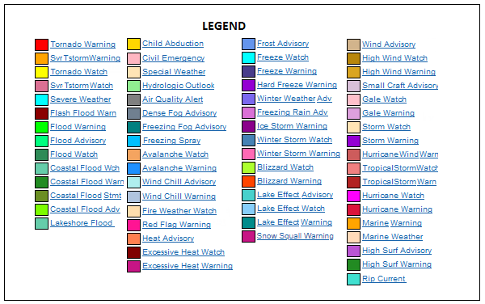

| Wall-A | Wall-F | Wall-NE | Aloft | Climate | GIS | Maps | Marine | Models | NWS | Radar | Rain | Satellite | Snow | Surface | Temps | Thunder | Tropical | Wind |
| Northeast Wall |
NOAA Advisories Map - Click for DETAIL! |
Legend  |
| Top of Page | |
Visible |
GeoColor |
Vapor |
Infrared |
| Top of Page | |
Northeast Radar |
Mid-Atlantic Radar |
Northeast Lightning |
Southeast Lightning |
| Top of Page | |
Temp |
Wind |
Dewpoint |
Humidity |
| Top of Page | |
6 Hour Temp Trend |
24 Hour Temp Trend |
7 Day Temp Trend |
30 Day Temp Trend |
| Top of Page | |
7 Day Precip Trend |
30 Day Precip Trend |
| Top of Page | |
6 Hour Dewpoint Trend |
24 Hour Dewpoint Trend |
6 Hour Pressure Tendency |
24 Hour Pressure Tendency |
| Top of Page | |
Northeast Rain |
Middle Atlantic Rain |
Northeast Snow |
Middle Atlantic Snow |
Northeast Ice |
Southeast Ice |
| Top of Page | |
| Severe Risk NE Day 1 |
Severe Risk Northeast Metro Day 1 |
| Severe Risk NE Day 2 |
Severe Risk Northeast Metro Day 2 |
| Severe Risk NE Day 3 |
Severe Risk Northeast Metro Day 3 |
| Top of Page | |
Wind 00-06hr |
Wind 06-12hr |
Wind 12-18hr |
Wind 18-24hr |
Max Wind Gust NE |
Max Wind Gust MA |
Max Wave Height NE |
Max Wave Height MA |
| Top of Page | |
6-Hour Forecast |
12-Hour Forecast |
18-Hour Forecast |
24-Hour Forecast |
30-Hour Forecast |
36-Hour Forecast |
42-Hour Forecast |
48-Hour Forecast |
| Top of Page | |
Day 1 High |
Day 1 Low |
Day 2 High |
Day 2 Low |
Day 3 High |
Day 3 Low |
Day 4 High |
Day 4 Low |
Day 5 High |
Day 5 Low |
Day 6 High |
Day 6 Low |
Day 7 High |
Day 7 Low |
| Top of Page | |
| Wall-A | Wall-F | Wall-NE | Aloft | Climate | GIS | Maps | Marine | Models | NWS | Radar | Rain | Satellite | Snow | Surface | Temps | Thunder | Tropical | Wind |